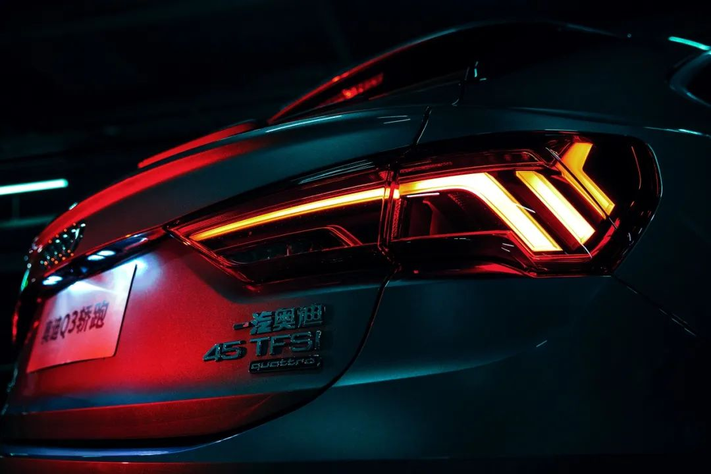

奥迪Q3轿跑：以Sportback设计语言定义SUV美学新高度
转载 齐宇时间 2020-05-27消费人群年轻化让SUV一词中“S”（Sport）的比重迅速上升，运动型SUV这一细分市场也随之被打开，越来越多的Coupe SUV涌现出来。横向观察这类车型，不难发现它们在设计上的共性——流线型的车尾，这种设计语言也被称为Sportback。
如果在Sportback的领域中论资排辈的话，奥迪绝对是元老级的厂商了。一直以来，奥迪都有Sportback的家族设计传统，如今奥迪Q3轿跑的来袭，再次定义了A级轿跑SUV的美学标杆。
跨越半个世纪的流线

聊起奥迪的Sportback设计史，我们甚至可以追溯到1968年。Audi 100 Coupe的惊艳亮相，彻底改变了人们对于德国车的固有认知。奥迪以Sportback的造型，宣告“德式厚重”的固有形象已成为过去。从如今的A5、A7这些车型身上，我们仍然还能看到Audi 100 Coupe的影子。
Sportback是奥迪在运动与美感上最巧妙的结合方式，它也同样是突破传统设计的“利器”。奥迪品牌的亚裔女设计师Seulah Park以Sportback设计语言诠释了SUV的全新风格，完成了奥迪Q3轿跑这一新生代作品。
优雅与运动
我们很难在第一时间准确道出自己对于奥迪Q3轿跑造型的初印象，因为它包容了两种看似对立的特征——优雅与运动。
从宏观上看，小角度的A柱与Sportback车尾共同构造出奥迪Q3轿跑极低的视觉重心。从车头到车尾，整车的肩线基本保持在同一水平高度，视觉效果堪比Audi 100 Coupe上那经典的“暴风线”，优雅且极富美感。

但当我们仔细端详奥迪Q3轿跑时，它极具进攻性的一面便展露无遗。矩阵式LED大灯与尾灯向下的折角设计，将车辆造型梳理得更为动感有型；S-line标识、运动型轮毂与蜂窝状的进气格栅，似乎都在极力释放出奥迪Q3轿跑的运动型格。
豪华的，科技的，奥迪的
相对于奥迪Q3轿跑在外观设计上的对立统一，其内饰所融合的元素要更加丰富。同级别中唯一的虚拟仪表盘和MMI显示器双屏结合，烘托出了奥迪车型所独有的科幻未来感。但科技所带给车内驾乘人员的主观体验，绝不是冰冷的科技气息。
奥迪很懂年轻消费者的需求，大面积Alcantara材质的包裹除了营造良好的视觉感受与触感之外，还能很好地激发驾驶员的操控欲望。而30色氛围灯与发光门槛灯带，又是奥迪对年轻式豪华这一命题所呈上的满分答卷。
年轻人的第一辆SUV
无论激进的外观设计还是富有科技感的内饰装潢，奥迪Q3轿跑都符合当下年轻人的审美，而且对于年轻一族来说，奥迪Q3轿跑更容易成为他们现实可行的目标。
作为传统的BBA品牌之一，奥迪本就有着很强的品牌力与大众认知度，奥迪Q3轿跑的售价区间以及产品特性都对年轻人有着极强的吸引力，它是品牌年轻化的代表作品。